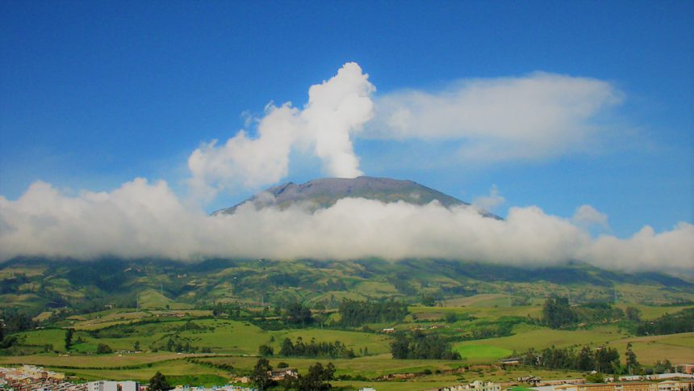

Popocatépetl

Description
Popocatépetl is the second most active volcano in Mexico. In terms of explosive activity and population threat, it ranks highest in Mexico and North America. One of the 10 most-populated volcanoes in the world, Popocatépetl has around 30 million people living within a 70 kilometre radius of its 5,452-metre summit.
History
The geological history of Popocatépetl began with the formation of the ancestral volcano Nexpayantla. About 200,000 years ago, Nexpayantla collapsed in an eruption, leaving a caldera, in which the next volcano, known as El Fraile, began to form. Another eruption about 50,000 years ago caused that to collapse, and Popocatépetl rose from that. Around 23,000 years ago, a lateral eruption (believed to be larger than the 1980 eruption of Mount St. Helens) destroyed the volcano's ancient cone and created an avalanche that reached up to 70 kilometres (43 mi) from the summit. The debris field from that is one of four around the volcano, and it is also the youngest.
Three Plinian eruptions are known to have taken place: 3,000 years ago (1195–830 BC), 2,150 years ago (800–215 BC), and 1,100 years ago (likely 823 AD).The latter two buried the nearby village of Tetimpa, preserving evidence of preclassical culture.
The first recorded European ascent of the volcano was made by an expedition led by Diego de Ordaz in 1519.The early-16th-century monasteries on the slopes of the mountain are a World Heritage Site.